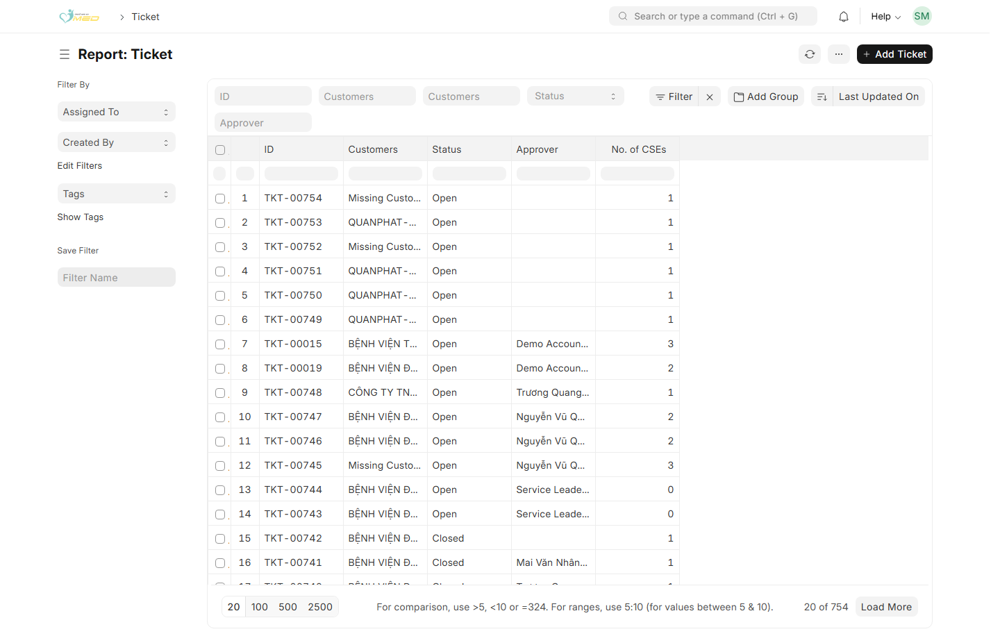
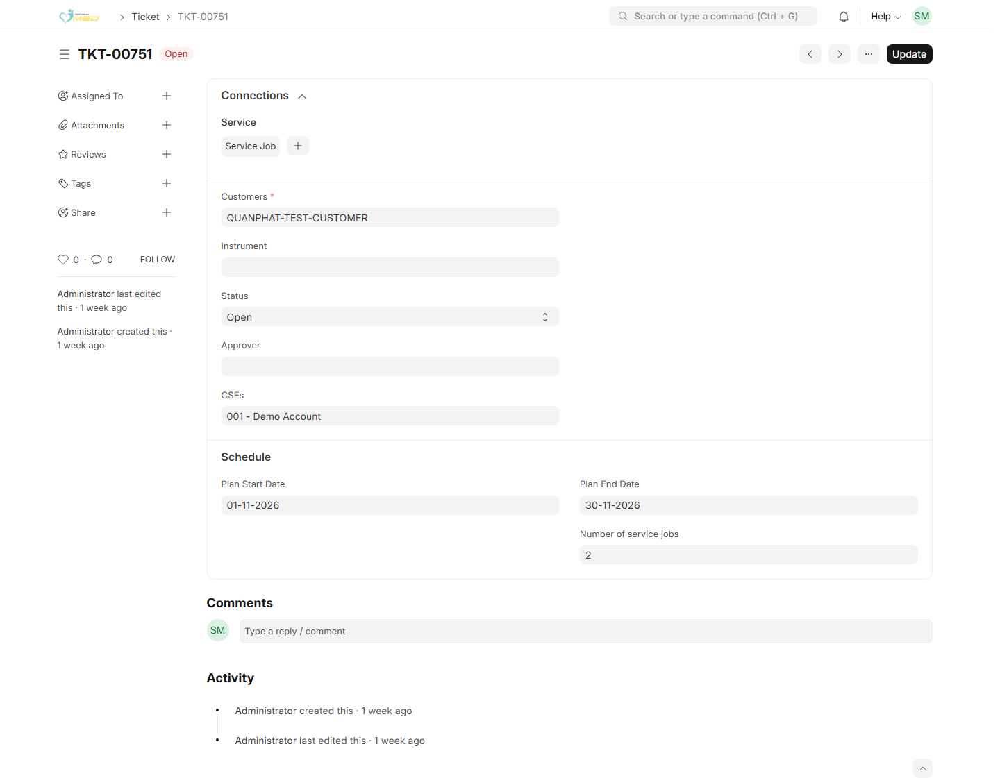
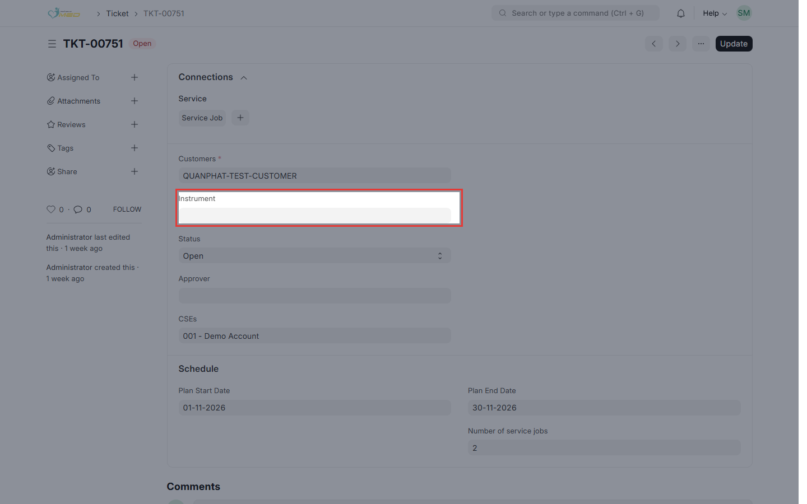

Chức năng Generate Schedule tạo N Service Job loại Preventive Maintenance từ một Ticket đã lưu (N = Number of service jobs). Ngày thực hiện được chia đều trong khoảng Plan Start Date — Plan End Date.
-
Nhấn Add Ticket
Trên Desk, nhấn Ctrl+G, gõ Ticket (hoặc mở từ workspace Service). Trên danh sách Ticket, nhấn + Add Ticket.

Danh sách Ticket — nút Add Ticket -
Điền thông tin bắt buộc
Trên form Ticket mới, điền ít nhất các trường sau trước khi lưu (cần cho Generate Schedule sau này):
Trường Ghi chú Customers Ít nhất một khách hàng. Job PM sinh ra lấy khách hàng đầu tiên trong danh sách. Instrument Bắt buộc có mã thiết bị trên Ticket — nếu trống, nút Generate Schedule không hiện sau khi lưu. Approver Service Leader hoặc Service Manager. CSEs Ít nhất một kỹ sư Plan Start Date / Plan End Date Khoảng kế hoạch PM (khối Schedule). Bắt buộc đủ hai ngày để hiện nút Generate. Number of service jobs Số đợt PM cần tạo (mặc định 1). Không được vượt quá số ngày giữa hai plan date (hệ thống kiểm tra khi lưu). Status Thường để Open. Ticket Closed không generate được. 
Form Ticket — khối Schedule và Customers -
Tạo (lưu) Ticket
Nhấn Save. Ghi nhớ mã Ticket (ví dụ TKT-00751). Nút Generate Schedule chỉ xuất hiện sau khi phiếu đã lưu, không có trên form chưa lưu.

Ticket TKT-00751 đã lưu — dev-erp.smartr.co -
Click Generate Schedule
- Mở lại Ticket vừa lưu (nếu đang ở danh sách).
- Trên thanh hành động phía trên form, nhấn Generate Schedule.
- Chờ thông báo — hệ thống tạo N Service Job PM; mỗi job một ngày Plan Start = Plan End trong khoảng plan của Ticket.
- Kiểm tra tab Connections hoặc danh sách Service Job để xem job mới.

Ticket TKT-00751 — chọn Instrument để hiện nút Generate (ảnh minh họa trường Instrument khi chưa đủ điều kiện) Một lần / ticket: Nếu đã có Service Job Preventive Maintenance gắn ticket, nút không hiện (hoặc server từ chối). Xóa các job PM cũ trước nếu cần lịch mới.
Xử lý sự cố
| Triệu chứng | Cách xử lý |
|---|---|
| Không thấy nút Generate Schedule | Kiểm tra: Ticket đã Save; Status không phải Closed; đủ Plan Start/End; Number of service jobs ≥ 1; có Customers và CSEs; chưa có job PM nào trên ticket. |
| Lỗi khi lưu Ticket | Number of service jobs lớn hơn số ngày giữa hai plan date — giảm N hoặc nới khoảng ngày. |
| Customer trên job không đúng | Job luôn dùng customer đầu tiên trong bảng Customers của Ticket — sắp xếp/thứ tự trước khi Generate. |